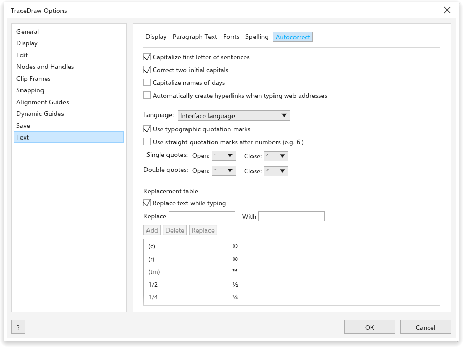
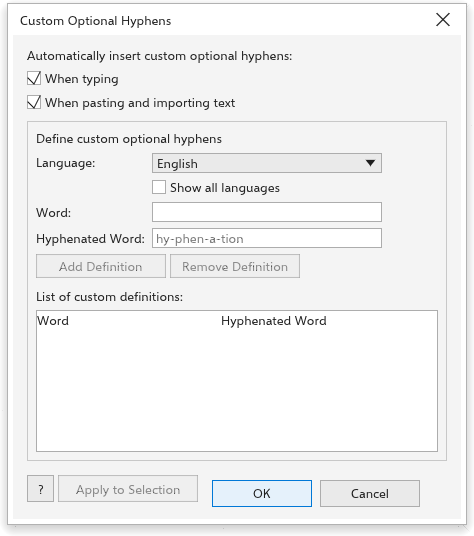
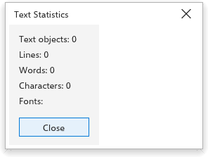
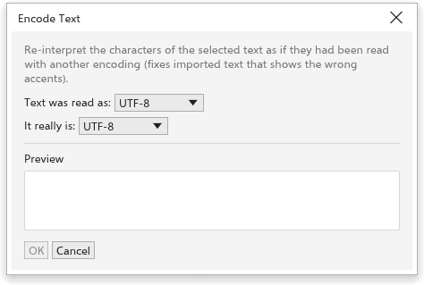

Diese Seite ist noch nicht übersetzt und wird auf Englisch angezeigt.
Writing tools
TraceDraw checks spelling and grammar, finds synonyms, corrects as you type, and fixes text that came in with the wrong characters. The commands are in Text > Writing Tools and the Text menu.
The Writing Tools dialog box
Text > Writing Tools > Spell Check, Grammar and Thesaurus open the Writing Tools dialog box at that tab. Check chooses whether to check every text of the page (Document) or only the selected texts (Selection).

Spell Checker
- Click Start. The first word not found shows, with suggestions under Replacements.
- Click a suggestion to put it in Replace with (double-click to replace at once), or type the right word.
- Click Replace for this place, Auto Replace for every place, Skip Once or Skip All to leave it, or Add to add the word to your own word list.
- Undo takes back the last replacement.
Options has Ignore words with numbers, Ignore words in capitals and Add corrections to Autocorrect.
Dictionaries
TraceDraw checks spelling with Hunspell dictionaries: for each language a .dic file and an .aff file with the same name, such as pt_BR.dic and pt_BR.aff. Free dictionaries for most languages can be downloaded from the projects that make them; other programs often install them too.
- Open Tools > Options > Text > Spelling.
- Click Open Folder and copy the
.dicand.afffiles into that folder (folders inside it work too), or name a folder that already has dictionaries in Also read dictionaries from. - Click Read Again. The Dictionaries list shows each one; clear a box to stop using it.
A word is right when any dictionary in use knows it. Dictionaries installed on your system are used as well. Without any, only a built-in word list is used.
Hyphenation dictionaries (hyph_ files such as hyph_pt_BR.dic) go in the same folders. Choose one under Text > Paragraph Text > Hyphenation patterns to hyphenate text in that language.
Grammar
The grammar checker finds doubled words, double spaces, spaces before punctuation, missing spaces after it, sentences that start in lower case, unbalanced brackets and quotes, repeated punctuation, sentences over 40 words, missing end marks and, in English, "a" and "an" before the wrong sound. For each finding it shows the replacement, the New sentence and the Rule Name. Click Start (then Replace), Skip Once or Skip Rule.
Thesaurus
Type a word (the first word of the selected text at first) and click Look Up. The meanings show with their synonyms: click one to pick it, double-click to look it up. Insert puts it in the text, keeping the capitals. Under Options, Close after inserting closes the dialog box after inserting, and Choose Thesaurus File uses a thesaurus file you have.
Autocorrect
Text > Writing Tools > Autocorrect opens the Autocorrect tab of Tools > Options > Text, which sets what is corrected while you type:
- Capitalize first letter of sentences;
- Correct two initial capitals ("THe" becomes "The");
- Capitalize names of days ("monday" becomes "Monday");
- Automatically create hyperlinks when typing web addresses: typing
www.example.comor an address starting withhttp://orhttps://gives the text object that hyperlink, unless it has one; - Language the language whose quotation marks are used (the interface language unless you pick another);
- Use typographic quotation marks, and Use straight quotation marks after numbers (e.g. 6');
- Single quotes and Double quotes: the Open and Close marks, if you want others than the language's;
- the Replacement table, used when Replace text while typing is on:
(c)becomes ©,(r)®,(tm)™,1/2½ and so on. Type in Replace and With, then click Add; click a row to Delete it, or change its text and click Replace.
Apply to Selection applies the rules to the selected text. Text you paste or import is never changed.

Custom hyphens
Text > Custom Optional Hyphens (also the gear of the Paragraph section of the Text panel) defines where your own words may break, such as product names. Those words break only there when hyphenation is on.
- Choose the Language (Show all languages lists every one).
- Type the Word and the Hyphenated Word with hyphens where it may break, such as
Trace-Draw. - Click Add Definition. Remove Definition removes the selected definition.
- Under Automatically insert custom optional hyphens, When typing and When pasting and importing text turn hyphenation on for texts that hold a defined word.
- Click Apply to Selection to apply them to the selected text now, or OK to keep them.

Change case
Text > Change Case changes the selected text to Sentence case, lowercase, UPPERCASE, Title Case or tOGGLE cASE.

Text statistics
Text > Text Statistics counts the text objects, lines, words, characters and fonts of the selected text, or of the page.

Encode
Text that came from another program sometimes shows the wrong characters, such as "café" instead of "café". Text > Encode fixes it:
- Select the text.
- Choose how the text Text was read as and what It really is (UTF-8, Windows-1252, ISO-8859-1, Mac OS Roman or Windows-1251).
- Check the Preview and click OK.

Web-compatible text
Text > Make Text Web-compatible simplifies the selected text for web pages: gradient, pattern, texture and mesh fills become a flat color, and outlines, shadows and effects are removed.